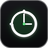

Belum ada website yang dibatasi.
Atur batas waktu untuk membatasi media sosial dan situs yang memicu distraksi.
Belum ada aktivitas minggu ini.
Waktu dari situs yang kamu batasi akan tercatat otomatis di sini.